Photo credits
Where the photos come from.
The photos are stock photos from Unsplash, used under the Unsplash License. None of them shows Slatehollow's work, because Slatehollow doesn't exist. The flat roof and storm pictures are illustrations drawn for this demo.
| What it shows | Photographer | Source | |
|---|---|---|---|
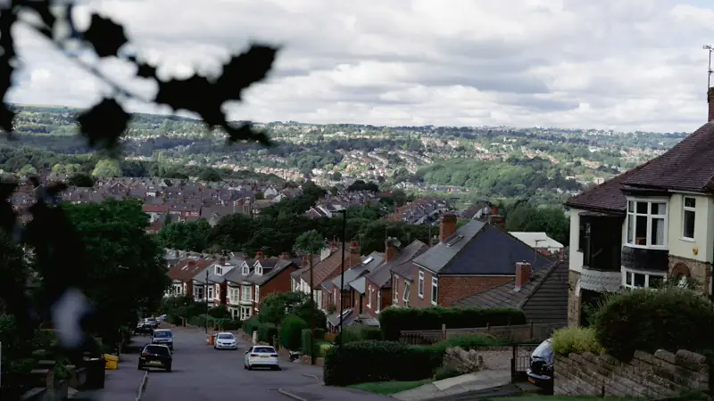 | A hillside town of houses and slate roofs below rolling hills | BEN ELLIOTT | Unsplash |
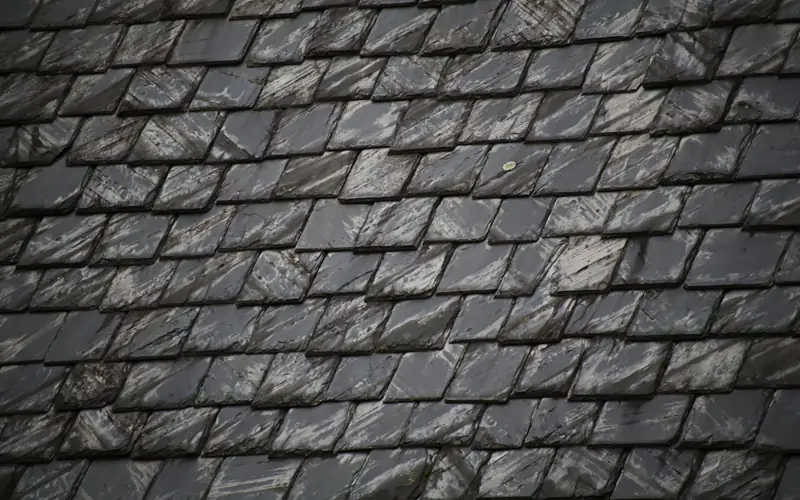 | Close-up of grey slates (also used, weathered in code, as the illustrative before) | Jacob McGowin | Unsplash |
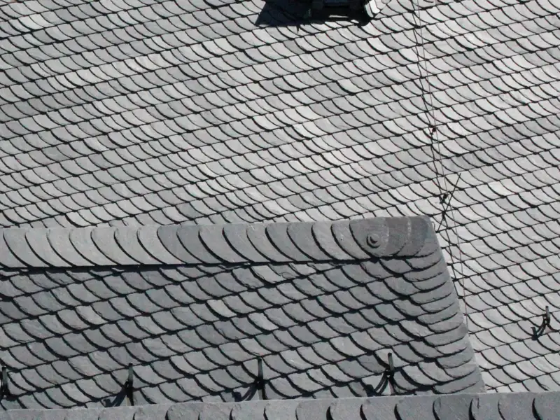 | Dark slate roof with a small dormer window | Alexander Philipp | Unsplash |
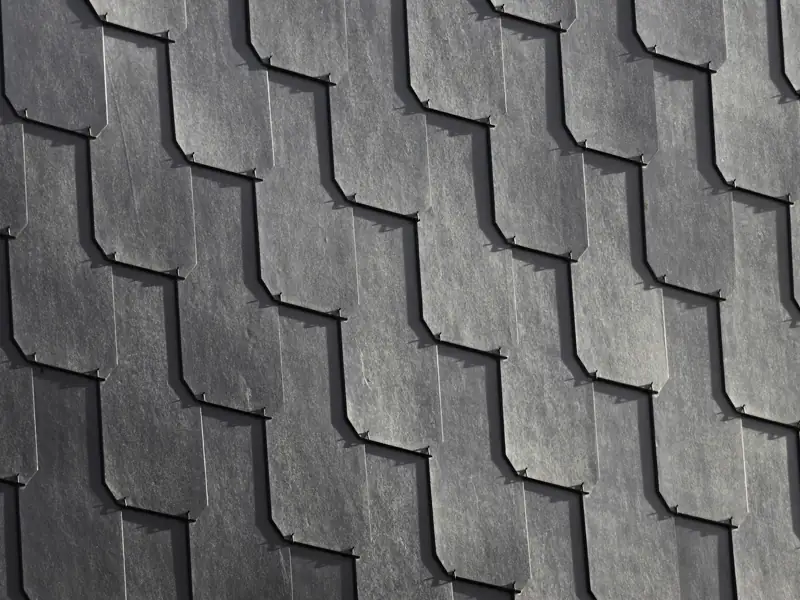 | Overlapping grey slates | Kay Nauwelaerts | Unsplash |
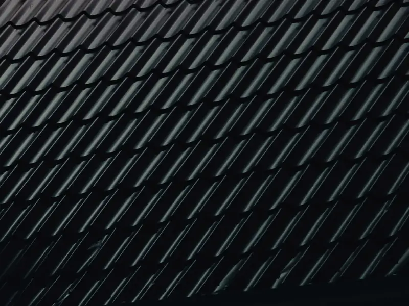 | Dark roof tiles in neat rows | Voicu Apostol | Unsplash |
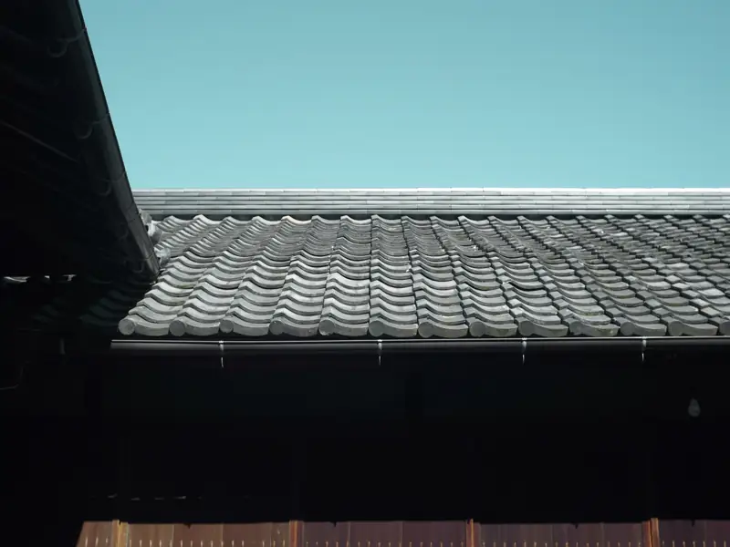 | Roof eaves and gutter edge against the sky | Damon Lam | Unsplash |
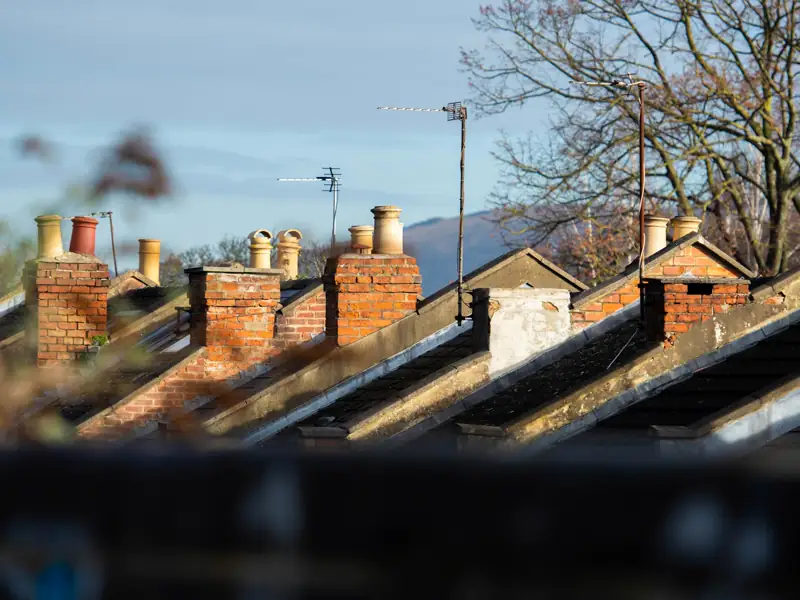 | A row of brick chimney stacks | Richard Bell | Unsplash |
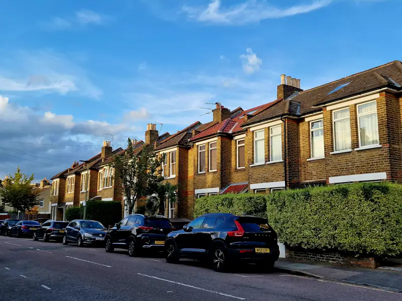 | A row of houses with cars parked on the street | Krisztina Anna Berecz | Unsplash |
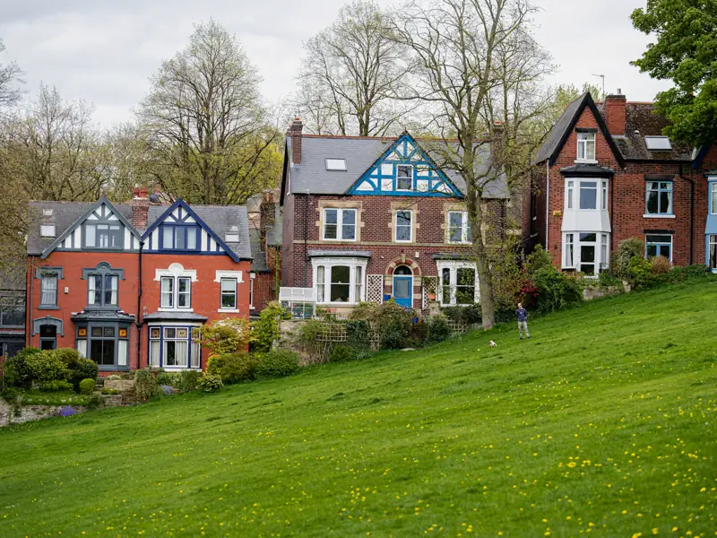 | Houses on a green hillside | BEN ELLIOTT | Unsplash |
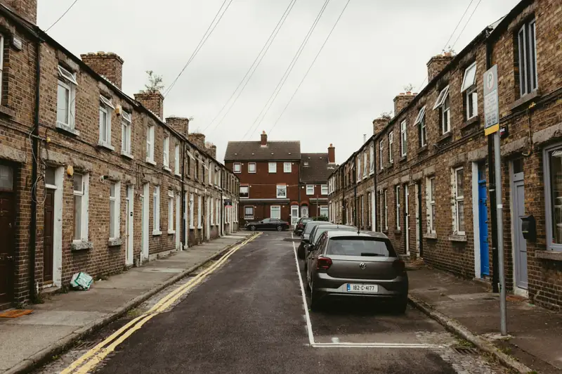 | A narrow street of traditional terraced houses | Jonathan Borba | Unsplash |
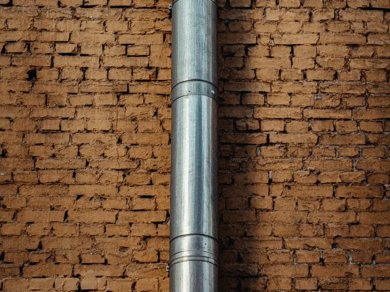 | A metal downpipe on a brick wall | Maksym Tymchyk | Unsplash |
Unsplash License: free to use, including commercially. The before and after slider uses one photo twice: the "before" is weathered in code and labelled Illustrative.